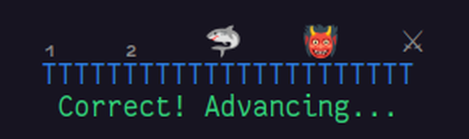

Overview
FlashBoss is a desktop terminal application for vocabulary acquisition. It combines a spaced-repetition scheduler, constructed example sentences with text-to-speech, themed content clusters, and a boss-fight graduation mechanic. The system is designed to develop receptive skills — reading, listening, and comprehension — in the target language.
A single Core pack contains 1,000 cards and delivers approximately 10,000 words of target-language input in context. Pareto expansion packs add roughly 20,000 words each, structured around the highest-frequency vocabulary not already covered. Supported languages are English, German, Spanish, Italian, and Esperanto.
Content architecture
This section describes the internal structure common to FlashBoss packs. Pack-level organization — how packs combine, and how foreign-language packs differ from English packs — is documented in section 3.
Card
Each card carries up to five text fields and two audio assets. Only the target-language fields are voiced:
| Field | Content | TTS |
|---|---|---|
TargetWord | The vocabulary item being trained. In gendered languages it carries its article, colour-coded to gender. | Yes |
Translation | The target word's meaning in the learner's native language. | No |
ExampleSentence | A constructed sentence placing the target word in context, using only vocabulary the scheduler has already introduced. | Yes |
ExampleTranslation | An idiomatic rendering of the example sentence in the learner's native language. | No |
Notes | Etymology, grammatical note, a second worked example, or a synonym set. Optional. | No |
Text-to-speech is applied only to the target-language fields. This asymmetry is deliberate: the goal is to saturate the learner in the target language's phonology while keeping the native-language scaffolding silent and unintrusive.
Cluster
A cluster is a themed group of cards — the unit of progress in FlashBoss. Clusters are introduced together, trained together, and graduated together through a single boss fight. Cluster themes are concrete and narrow: Numbers and time, Travel and accommodation, Regional cuisine, Social roles and people.
Tier
Clusters sit inside tiers. A Core pack contains five tiers, each typically comprising around eight clusters. In foreign-language packs, tier membership is a difficulty gate: it governs which grammar structures may appear in a cluster's example sentences. Tier 3 example sentences are restricted to present, imperative, and preterite; tier 4 adds imperfect and conditional; tier 5 opens full grammar including subjunctive. In English packs the tier system is used thematically rather than syntactically — tier membership reflects topical domain (e.g. Forms and documents, Social and email, Confusables) rather than grammatical complexity.
Lesson
Lessons are reference pages pinned to specific cards — checkpoint material that accompanies a card through training. When a card with an attached lesson first appears, the lesson appears alongside. Each time the card resurfaces under the spaced-repetition schedule, the lesson resurfaces with it. Lessons are therefore persistent reference, not one-time exposures. A learner who has internalized a lesson's content can deactivate it individually: the card continues training, the lesson stops appearing.
Pack structure
A pack is FlashBoss's distribution unit: a standalone vocabulary set — typically 1,000 cards — with its own cluster structure, tier structure, and lesson library. Packs ship under two different paradigms depending on the language.
Foreign-language packs: cumulative three-pack progression
German, Spanish, Italian, and Esperanto each ship as a three-pack sequence: Core, Pareto 1, and Pareto 2. The progression is cumulative — each pack assumes the vocabulary introduced in previous packs and constructs new example sentences on top. Example sentences in Pareto 1 draw from Core vocabulary plus the new Pareto 1 target words; Pareto 2 assumes both prior packs. A learner completing all three reaches a 3,000-card receptive vocabulary in the target language.
Tier numbering is continuous across the sequence. Core covers tiers 1–5. Pareto 1 and Pareto 2 between them extend the sequence by ten further tiers: tier 6 is the first Pareto tier, tier 15 is the last.
CEFR targets by pack:
| Pack | Cards | Target |
|---|---|---|
Core | 1,000 | A1–A2 grammar exposure; prepares a learner for A2 immersion instruction. |
Pareto 1 | 1,000 | High-frequency B1–B2 vocabulary; extends into registers absent from Core (travel, bureaucratic, social). |
Pareto 2 | 1,000 | B2–C1 vocabulary; formal connectors, abstract registers, cultural content. |
English packs: individual standalones
English ships differently. Each English pack is a self-contained 1,000-word vocabulary set, and learners select packs based on level and interest rather than completing them in order. There is no cumulative progression — completing one English pack does not presuppose another. English packs fall into two structural families:
- Level packs — vocabulary that pulls a reader up a level and leaves them there. English Adept, the free hub pack, spans the longest climb: it onramps from below an eighth-grade reading level and carries the learner up to university readiness, terminating around C1. English Advance targets the practical English of functioning in society without limitation: the forms, letters, officialdom, and everyday documents adult life demands. The guiding principle is to do it once, properly, and you will never have to think about it again.
- The Roots series — paid packs that drill English vocabulary through its three etymological strata: German Roots (Anglo-Saxon), Norman Roots (Norman-French), and Latin Roots (scholarly). Cross-references between the three surface the historical doublets that give English its register system.
Session structure and scheduling
A training session processes each card through five phases. The first four are per-card; the fifth is per-cluster.
Listen
TTS plays the target word followed by the example sentence. Only the target word appears on screen. This is first exposure.
Read
The example sentence and its translation appear. The learner has time to parse the sentence, cross-reference the translation, and absorb the grammar in context.
Repeat
TTS replays the example sentence on demand. Repeat cycles are unlimited at this phase; the learner moves forward when ready.
Rate
The learner rates their recognition on a six-point scale (0 through 5). The rating shifts the card's position in a Fibonacci interval sequence (1, 2, 3, 5, 8, 13, 21… days), with a per-rating minimum interval applied as a floor. Rating 0 is a special case — a reset to 1 day regardless of the card's prior position.
| Rating | Meaning | Interval change |
|---|---|---|
0 | Forgot completely. | Reset to 1 day. |
1 | Very poor. | Position −3 (minimum 1 day). |
2 | Poor. | Position −2 (minimum 2 days). |
3 | Okay. | Position −1 (minimum 3 days). |
4 | Good. | No change (minimum 5 days). |
5 | Perfect. | Position +1 (minimum 8 days). |
The scale is calibrated to require aggressive rating for progress. Only a 5 advances a card; 4 holds position; 1 through 3 step the card backward through the Fibonacci schedule; 0 resets it to 1 day. The per-rating minimum intervals prevent a card's interval from collapsing on a bad rating, and they anchor the mastery rule.
Card mastery
A card is mastered on two consecutive 5 ratings. The mechanism is direct: a single 5 lifts the card's minimum interval to 8 days; a second 5 advances it to 13 days — the mastery threshold. From any starting position, two consecutive perfect recalls therefore carry a card to mastery.
Daily sessions
New cards are drawn into the deck one at a time in cluster order; cluster boundaries do not gate card introduction. Daily card volume follows a Fibonacci ratio — for a given day's session, review cards and new cards are drawn in proportion to consecutive Fibonacci numbers, so the mix approaches φ, the golden ratio.
Bossfight ready?
A cluster becomes eligible for its boss fight when 80% of its cards are mastered — when 80% have reached the 13-day interval. You don't need to master every card to fight: but you do need to defeat your most challenging two cards in a row to win. Fight mechanics are discussed in detail in the following section.
The boss fight
The boss fight is the graduation mechanism for a cluster. It is the only way a cluster transitions out of active training. Unlike the Rate phase — which is self-assessed — the boss fight is adversarial and strictly multiple-choice. The learner and the boss share a single linear arena; the learner starts at the left, the boss stands further right. The task is to shove the boss off the far end. Sumo rules: only one remains on the platform.
Each turn presents one of the cluster's cards as a prompt, with eight possible answers on the number keys 1–8. A correct answer advances the learner one position along the track; the boss is simultaneously shoved one position closer to the far edge. A wrong answer slides the learner two positions back toward the near edge, or off of it. When pushed off the near edge, the learner is locked out of that cluster's fight until the next day. Shoved past the far edge, the boss is defeated and the cluster is conquered.

Card ordering inside the fight is deliberate. Positions 1 and 2 pull from the cluster's easiest cards — a warm-up that lets the learner build a positional lead. Positions 3 and 4 pull from the cluster's hardest: the weakest words in the deck, delivered as soon as the learner has started to gain ground. A wrong answer at position 3 or 4 slides the learner two positions back — landing on position 1 or 2 — and the missed card is reclassified as the learner's easiest from that moment on. Unfortunately, that means it's waiting for them: the same card, now sitting in the easy slots where they've just landed. A cluster cannot be conquered until its weakest cards are mastered.
The design rationale is documented in section 6. In brief: the boss fight injects a bounded, low-stakes stressor that produces genuine retrieval pressure without the consequences of a real-world language failure. It also provides a discrete success state — cluster conquered — that the open-ended rhythm of spaced repetition otherwise lacks.
Pedagogical design
FlashBoss's architecture reflects established findings in second-language acquisition and cognitive psychology. The relevant foundations:
Comprehensible input
Krashen's input hypothesis [1] holds that learners acquire language most effectively when input is slightly above current competence — comprehensible enough to parse, demanding enough to extend. Example sentences in FlashBoss are constructed so that the target word is typically the only unknown element; the surrounding sentence is drawn from vocabulary the scheduler has already introduced. This calibrates comprehensibility to roughly 80–95% for the trained learner, placing each sentence in the i+1 zone.
Retrieval practice
Active recall produces stronger long-term retention than re-reading [2]. The Rate phase forces retrieval before the translation is revealed, applying the testing effect to every card exposure. Cards are not passively shown; they are actively recalled and self-assessed.
Spaced repetition
Memory decays along a predictable curve [3]. Reviewing a card just before forgetting consolidates the memory trace more efficiently than massed repetition. The Fibonacci interval sequence is one of several schedules that approximate the forgetting curve; it is used here for its simplicity, stability, and intuitive progression for the learner.
Desirable difficulty
Retention benefits from effort at the point of encoding and retrieval [4]. The Rate scale enacts desirable difficulty by making regression the default: ratings below 5 either hold a card in place or push it backward through the Fibonacci schedule. Only unambiguous recall earns forward motion, and mastery requires two such recalls in succession. Until a significant majority of a cluster is completed, all of a cluster's cards stay in circulation, but words that are known well do not compete for attention with more worthy material.
Affective framing
High anxiety degrades acquisition [1]. The boss fight is designed to introduce pressure without raising the affective filter: stakes are bounded (a single failed fight costs a day, not standing in a conversation), the system is private, and no permanent record exists. The pressure is engineered to be sharp enough to focus retrieval and shallow enough to preserve the conditions acquisition requires.
Input before output
Receptive skills develop asymmetrically faster than productive skills when trained alone. Saturating a learner in high-comprehension input before asking for production tracks how first-language acquisition proceeds in children, and allows the vocabulary and grammar to become parseable before they become deployable. FlashBoss is the input half of a complete learning pipeline; productive practice — speaking, writing, interaction — is the responsibility of tools FlashBoss does not attempt to replace.
Scope
FlashBoss trains:
- Target-language vocabulary and recognition.
- Sentence-level reading comprehension.
- Listening comprehension via TTS.
- Incidental grammar acquisition through exposure in context.
- Reading fluency at the clause level.
FlashBoss does not train:
- Writing production.
- Conversational fluency.
- Interaction repair strategies.
These require live interaction and direct feedback that a scheduler cannot provide. FlashBoss is designed to be the comprehension engine underneath a larger study plan — the engine that makes interaction profitable when it happens elsewhere.
Using FlashBoss effectively
Cadence
Ten to twenty minutes per day. The scheduler is calibrated for daily sessions; longer gaps degrade the interval calibration. Missed days are absorbed without permanent damage, but consistency is the primary variable separating learners who complete Core from learners who do not. New-card introduction is controlled by the scheduler's Fibonacci split (section 4), not the learner — running multiple sessions in a day does not accelerate pacing.
Failed fights
A failed boss fight is expected, not a defect. A card missed in the hard positions (3–4) is reclassified as your easiest from that point on, so it returns in the opening positions of the next attempt. The cluster cannot be conquered until that card is answered correctly — the word that beat you becomes a gate you have to clear before the fight will end. Clusters can take multiple attempts, but there's always tomorrow.
Expected arc
A consistent learner completes Core in two to six months. FlashBoss creates the illusion of knowing more than you do, because it keeps you in a bubble of language you know, expanding out in a controlled way. There will be big gaps in your comprehension, but if you keep going, those gaps will close. And in the meantime, you understand more every day. We wish you well on your language journey — Masters Odiin and Claude.
References
- Krashen, S. D. (1982). Principles and Practice in Second Language Acquisition. Pergamon. (Input hypothesis; affective filter.)
- Roediger, H. L., & Karpicke, J. D. (2006). Test-enhanced learning: taking memory tests improves long-term retention. Psychological Science, 17(3), 249–255.
- Ebbinghaus, H. (1885). Über das Gedächtnis. Duncker & Humblot. (Forgetting curve, precursor to spaced repetition; cf. Leitner, 1972.)
- Bjork, R. A. (1994). Memory and metamemory considerations in the training of human beings. In Metacognition: Knowing about Knowing. MIT Press. (Desirable difficulty.)